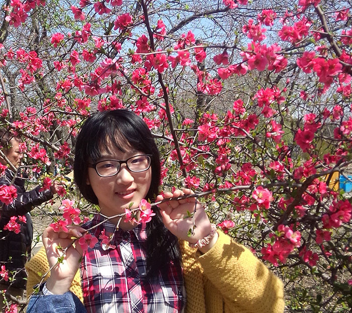
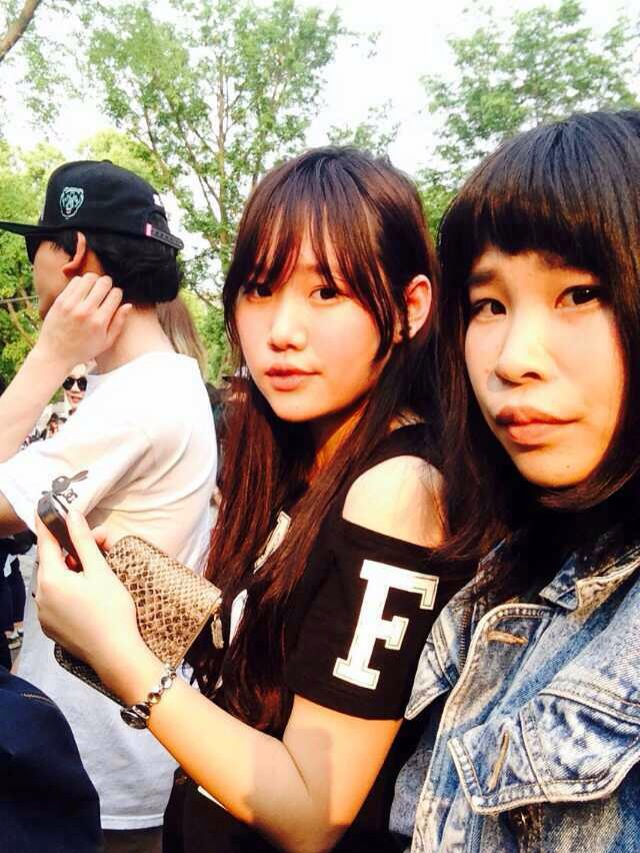

发信人: BeatboxST (ST), 信区: outdoor
标 题: 【野协团爆】【第五弹】宣传部！
发信站: 饮水思源 (2014年06月08日00:49:32 星期天)
部长：沈涛
副部长：钟焱婷
爆了这么久终于轮到自己部门啦^ ^，首先上一张换届时候的合影，从左到右依次为拓占宇
(研一，说自己过了年龄所以就不单独爆了)、沈涛、胡婷（神奇的大三学姐）、苍老师（
前任部长大家相信都很熟悉啦么么哒）

从自己先开始吧，我叫沈涛，媒体与设计学院大一，11级。（是不是觉得哪里不对，看了
下面这张照片你就明白了）
screen.width - 200){this.width = screen.width - 200}">
退伍后是这个学期加入的野协，有点晚，不过还是有机会走了挺多线，也认识了很多人，
嗯，发现这是一个很（mei）有（jie）爱（cao）的集体。
第一条线是金紫尖，给我印象很深，也让我开始喜欢上了户外
然后这是七尖，依然记得软妹子学姐（右下）的厨艺，超赞啊！下次走线一定还得拉上她

这是我走的第一条内部线，没有向导，真正体会了什么叫做野外生存，中间各种悲剧= =就不细说了，不过衢州的兔头还是灰常赞的！

最后上一张自己在环上海的自拍，最近迷上了骑行，也算是在没有走线时的消遣啦，嗯，
骑车会上瘾，这是真的

钟焱婷 大一，农业与生物学院，植物科学与技术专业。最喜欢和闺蜜一起旅游啦（可惜
不太有机会啦）
 screen.width - 200){this.width = screen.width - 200}">
( ' – ' )
性格挺内向的，虽然不常旅行，但很爱山山水水。
喜欢拥抱自然，喜欢绿水青山，喜欢宁静浩瀚……
刘煦阳
大家好我叫刘煦阳，来自媒体与设计学院环艺专业大一
screen.width - 200){this.width = screen.width - 200}">
其实加入野协纯属意外，也没怎么参加协会的活动，但是没想到后来新部长竟然是自己班
的（哭晕），好吧因为会做海报啥的，希望能为野协多做点事吧^ ^野协是个好社团，有空
还是很想和大家走线哒。性格嘛我也说不清啦，反正熟悉以后会让大家心里之前的印象幻
灭肯定是真的啦~~
 screen.width - 200){this.width = screen.width - 200}">
胡婷
screen.width - 200){this.width = screen.width - 200}">
自我介绍：电院大三学姐（这样介绍真的好么= =）
--
※ 来源:·饮水思源 bbs.sjtu.edu.cn·[FROM: 112.84.183.163]
※ 修改:·BeatboxST 于 2014年06月08日00:51:25 修改本文·[FROM: 112.84.183.163]
|